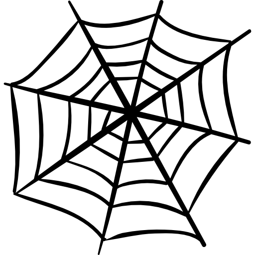

I'm CJ
mathematician
programmer
web developer
Hi
I am a Web Developer and Mathematician. I also love writing poetry and making music.
Whether it's solving problems, designing websites, or outlining the soul, I love to do it.
I am a Web Developer and Mathematician. I also love writing poetry and making music.
Whether it's solving problems, designing websites, or outlining the soul, I love to do it.

I started to learn how to code when I was 18. Since then I have gained a lot of knowledge and experience in the field.
I love Mathematics and I am aiming to obtain a Doctorate in that field. I am currently in my final year of a Mathematics degree and have finished all Calculus related courses.

I can play the guitar and I want to produce my own music as soon as I have the capabilities to do so.
I have worked on some projects as a developer, both websites and applications
For examples, feel free to follow the link below:
If you have further enquiries,
or if you just want to talk about poetry,
feel free to contact me!